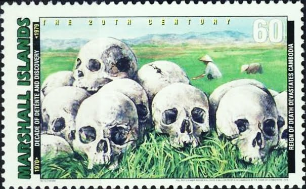
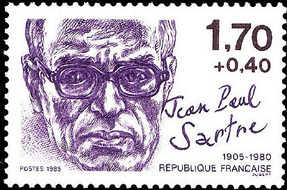
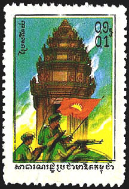
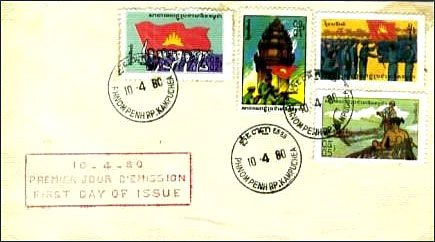
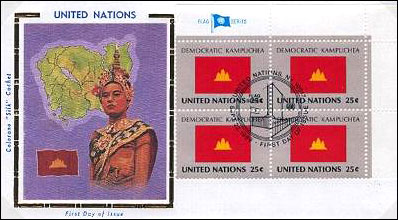
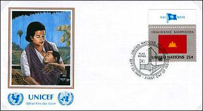
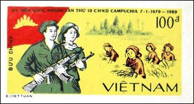
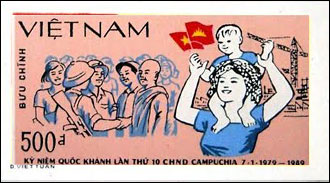
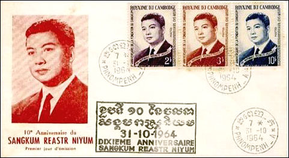
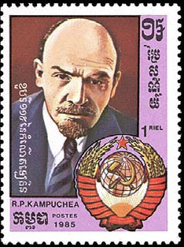

CAMBODIAN GENOCIDE
To keep you is no benefit.
To destroy you is no loss. KR.
The Khmer Rouge (KR), literally translated as Red Khmers was the name given to the followers of the Communist Party of Kampuchea in Cambodia. It was formed in 1968 as an offshot of the Vietnam People's Army from North Vietnam, who were the ruling party in Cambodia from 1975 to 1979, led by Pol Pot, Nuon Chea, Ieng Sary, Son Sen, and Khieu Samphan. Democratic Kampuchea was the name of the state as controlled by the government of the Khmer Rouge from 1975 to 1979.
This organization is remembered primarily for its policy of social engineering, which resulted in genocide. Its attempts at agricultural reform led to widespread famine, while its insistence on absolute self-sufficiency, even in the supply of medicine, led to the deaths of thousands from treatable diseases such as malaria. Arbitrary executions and torture carried out by its cadres against perceived subversive elements, or during purges of its own ranks between 1975 and 1978, are considered to have constituted genocide. Source

New People were civilian Cambodians who were controlled and exploited by the Khmer Rouge regime in Cambodia from 1975-1979. Generally, anyone who was from an urban area was made a New Person and people from rural areas were made Old People. New People were not allowed any property and they were forced to work at least 10 hours a day and often added hours. Their limited food rations led to starvation. Disease was rampant and in 1976 it was estimated that 80% of the Cambodian population suffered from malaria. One of the Khmer Rouge mottos, in reference to the New People, was "To keep you is no benefit. To destroy you is no loss."

"His [Sartre's - VM] influence on South-East Asia, where the Vietnam War was drawing to close, was even more baneful [than in Africa - VM]. The hideous crimes committed in Cambodia from April 1975 onwards, which involved the death of between a fifth and a third of the population, were organized by a group of Francophone middle-class intellectuals known as Angka Leu ('the Higher Organization'). Of its eight leaders, five were teachers, one a university professor, one a civil servant and one an economist. All have studied in France in the 1950s, where they have not only belonged to the Communist Party but had absorbed Sartre's doctrines of political activism and 'necessary violence'. These mass murderers were his ideological children." Source: Samuel Johnson - Intellectuals. ISBN-10: 1164096273.
The postal system and the stamps of the Khmer Rouge era
The Khmer Rouge took over Cambodia in 1975. The new regime allowed no civilian private communication and so abolished the postal system. Service resumed in early 1979 when the Vietnamese army drove Khmer Rouge out of the capital Phnom Penh.
1980 saw the first set of postage stamps issued after liberation. Source


Many people have wondered what happened to the postal system in Cambodia after the Khmer Rouge (KR) came to power in mid-April 1975 and subsequently renamed the country ‘Democratic Kampuchea’. With Pol Pot at the center of power, the ultra-Maoist regime that is thought by many to have caused the death of around two-to-three million Cambodians until the KR were overthrown in late 1978 by Vietnamese military force.
It is generally accepted that no postage stamps were issued by the Government of Democratic Kampuchea for domestic or international use during their control over Cambodian territory from 1975 to late-1978. The Ministry of Post and Telecommunications was ‘disbanded’ by the KR and no official of Democratic Kampuchea was assigned to oversee the tasks of post and communications during those years of abject terror.
Collectors of Cambodian philately will be only too familiar with the gap in stamp catalogues for this period. Stanley Gibbons includes three small paragraphs headed, ‘Democratic Kampuchea’, as follows: “...the discontinuance of postal and telegraphic services. In these circumstances no stamps were issued. Five pictorial stamps inscribed “Kampuchea” without indication of currency were publicised early in 1978; if they exist their status would be propaganda labels.” (Source: South-East Asia Stamp Catalogue, Part 21, Stanley Gibbons, 4th Edition, August 2004, p. 53)
However, written domestic communications did take place in Democratic Kampuchea. Such correspondence was, once again, limited to the senior hierarchy of the Khmer Rouge. Written communications were hand-carried and no postmark or postage stamp was necessary, nor used, as far as is known at present.
Communications from Democratic Kampuchea to any person or agency outside of the country was only undertaken, as far as is known at present, by Pol Pot, Khieu Samphan and Ieng Sary. No other people within the country were allowed to enter into any form of communication with the outside world.
The Khmer Rouge and the United Nation
As many collectors of Cambodian stamps know, the United Nations Postal Administration issued stamps in the name of Democratic Kampuchea as part of their ‘flag series’ in 1989, including First Day Covers, as shown below.

The UN’s children’s fund – UNICEF – also issued a FDC that recognized the Pol Pot regime’s official status as the formal Government of Cambodia within the UN as seen below. This material was issued by the UNPA ten years after the Khmer Rouge lost the control of Cambodia!

"The Liberators"
Vietnamese domination of Cambodia is once again reflected on Vietnam stamps in 1989. The Vietnamese postal administration issued a two values set celebrating the 10th anniversary of National Day of Cambodia, the day that marks the Vietnamese took over Phnom Penh in 1979. Source.


Old rulers' ghosts in the news
On October 14, 2004, King Norodom Sihamoni was selected by a special nine-member throne council, part of a selection process that was quickly put in place after the abdication of King Norodom Sihanouk a week prior. Sihamoni's selection was endorsed by Prime Minister Hun Sen and National Assembly Speaker Prince Norodom Ranariddh (the king's half brother and current chief advisor), both members of the throne council. He was enthroned in Phnom Penh on October 29, 2004.

Below is a Lenin stamp issued by R.P. Kanpuchea in 1985, with hammer and sickle over the globe and a coat of arms similar to that of the USSR.

The People's Republic of Kampuchea ( PRK ) was a partially recognised state in Southeast Asia which existed from 1979 to 1989. It was a client state of Vietnam , founded in Cambodia by the Vietnamese-backed Kampuchean United Front for National Salvation , a group of Cambodian communists who were dissatisfied with the Khmer Rouge due to its oppressive rule and defected from it after the overthrow of Democratic Kampuchea , Pol Pot 's government. Source
Created: 05/20/2012. Revised: 1/11/2024.
Copyright © 2012 - 2024 by Victor Manta, Switzerland/USA.
All rights reserved worldwide.